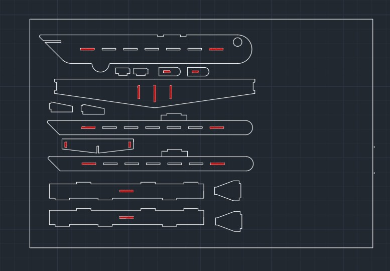

Miniprojekt: Kartonová sestava na laseru

Jednoduchý kartonový model letadla řezaný laserem bez lepidla
Zadání
Úkolem bylo vytvořit sestavu z kartonu na laserové řezačce ve StrojLabu bez použití lepidla či jiných adhezivních prvků. Spoje tedy musely být řešeny čistě pomocí vyřezaných zámků.
Mým návrhem bylo jednoduché kartonové letadlo ve formě "těžítka" – statická ukázka, nikoli letuschopný model.
Model a podklady
Po dokončení podkladů pro laser jsem připravil výrobu jednotlivých dílů.
Vyřezané díly
Díly jsou připravené ke skládání, spoje využívají zámky a přesahy.
Sestavení
Skládání probíhalo jako "skládačka" – díly do sebe zapadly pomocí zámků a uložení s přesahem.
Návaznost na hlavní projekt
Laserové řezání bylo nejpoužívanější technologií při výrobě dílů hlavního projektu. Na laseru jsem vyráběl profily, nosníky i stěny.